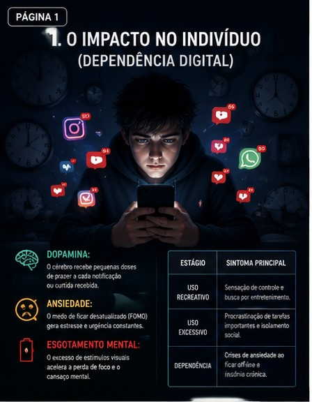

O vício em telas não é apenas uma "distração passageira", é uma condição séria. A tecnologia das redes modernas é desenhada para manter o usuário em um estado de rolagem infinita, afetando diretamente a saúde mental.
Eu e meu amigo seremos grandes imoresarios.
| Estágio | Sintoma Principal |
|---|---|
| Uso Recreativo | Sensação de controle e busca por entretenimento. |
| Uso Excessivo | Procrastinação de tarefas importantes e isolamento social. |
| Dependência | Crises de ansiedade ao ficar off-line e insônia crônica. |
Plataformas predatórias não promovem conexões reais; elas alimentam a polarização e a constante busca por validação superficial.
O impacto social inclui o aumento do cyberbullying e a queda na produtividade escolar e de trabalho. Quando uma pessoa se torna refém das telas, ela deixa de interagir presencialmente com sua família e comunidade.
Na inovação tecnológica, as empresas usam Algoritmos de Recomendação. Eles analisam seu comportamento em tempo real: se você reduz o uso, o sistema envia uma notificação chamativa para te puxar de volta.